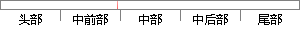

4W(API 级别 20) 已经弃用屏幕方向传感器类型。
片段位置图

相似结果|
1
原句片段：4W(API 级别 20) 已经弃用屏幕方向传感器类型。
相似片段 1：从API级别3开始,可以通过使用重力传感器和地磁场...使用设备的地磁场传感器和加速度计来计算屏幕方向的...19 20 21 22 23 24 25 26 27 28 29 30 1...
相似片段 2：API 9 以上,上下左右四个方向,由物理方向传感器决定...keyboard 键盘类型发生变化——例如:用户插入了外接...在API级别13里加入的。 smallestScreenSize 物理屏幕...
|
※ 片段修改建议 ※
近似词参考：- 已经：已
- 方向：标的目的 偏向
- 类型：范例
系统自动生成语句：4W(API 级别 20) 已弃用屏幕标的目的传感器范例。
注：本片段修改建议为系统自动生成，仅供参考。